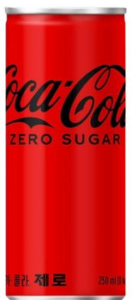

모아보기
기업 소개
고객 지원
모아보기

코카콜라 제로
코카콜라 제로는 제로 칼로리 음료 시장에서 많은 기대를 받았지만, 소비자들의 입맛을 사로잡는 데 한계가 있었습니다. 이 음료는 기존 코카콜라의 맛을 유지하면서 칼로리를 줄인 제품이었지만, 실제로는 맛이 많이 달라졌다는 평가를 받았어요. 특히 단맛이 인위적으로 느껴진다는 지적이 있었고, 이런 이유로 제로 칼로리 음료를 찾는 소비자들에게 만족감을 주지 못했죠. 그래서 펩시 제로 라임맛 같은 경쟁 제품에 비해 흥행에 실패했습니다. 건강을 중시하면서도 맛을 중요하게 여기는 요즘의 트렌드 속에서 코카콜라 제로는 소비자들의 기대를 충분히 충족시키지 못해 시장에서 좋은 성과를 내지 못했습니다.
웰치스 제로
웰치스 제로에 대한 반응은 대체로 긍정적입니다. 많은 사람들이 칼로리가 낮고 설탕이 없는 점을 좋아하며, 포도나 오렌지 등, 웰치스 특유의 과일 맛이 향긋하다고 평가합니다. 이에 건강을 생각하는 소비자들 사이에서 인기가 높아지고 있는 추세인데요. 기존의 웰치스 본품과 일부 다른 점은 기존의 쨍한 포도 맛과 다르게, 제로는 맹한 맛이 있고 뒷맛이 심심하면서 마무리가 깔끔한 것이 특징입니다. 오히려 끈적끈적한 점이 없다는 점이 많은 탄산 애호가들의 마음을 사로 잡고 있습니다. 칼로리가 0임에도 불구하고 다른 음료들에 비해 상대적으로 높은 퀄리티를 가지고 있습니다. 탄산 음료를 마시고 싶으면서 건강도 챙기고 싶을 때 대체 선택지로 좋을 듯합니다.
펩시콜라 제로 - 라임맛
펩시 제로 라임맛은 제로 칼로리 음료 시장에서 가장 히트한 제품 중 하나로, 상쾌한 라임 향과 청량감이 더해진 독특한 맛이 특징입니다. 인공 감미료를 사용했음에도 불구하고 자연스럽게 풍부한 단맛과 상큼함을 동시에 제공해, 기존 제로 음료가 가진 밋밋한 맛을 개선했습니다. 특히 건강을 중시하면서도 맛을 포기하지 않으려는 젊은 세대의 트렌드에 부합하여 빠르게 인기를 얻은 제품인데요. 이 제품은 일반 탄산음료의 칼로리 부담을 느끼는 소비자들에게 대안으로 자리 잡았으며, 상쾌한 라임의 풍미 덕분에 다른 음식과 곁들여 먹을때의 긍정적인 반응을 이끌어내고 있습니다.
티즐 제로 - 자몽블랙티 맛
이곳저곳 사랑을 많이 받지만, 특히 고양국제고 자판기에 있는 티즐 제로는 학생들 사이에서 인기가 있는 제로 칼로리 음료 중 하나입니다. 달콤하면서도 칼로리가 없다는 점이 특히 건강을 고려하는 학생들에게 매력적으로 다가옵니다. 기존 음료의 높은 당분을 피하면서도 과일향이 가미된 상큼한 맛을 즐길 수 있어, 자습하거나 수업을 들을 때 간편하게 마시기에 적합한 음료입니다. 특히 탄산음료를 부담스럽게 느끼는 학생들에게 청량감과 상쾌함을 제공하면서도, 다른 음료에 비해 상대적으로 인공적인 맛이 적어 무난한 평가를 받고 있습니다. 간식 대용으로도 가볍게 마실 수 있어 자판기에서 꾸준한 선택을 받고 있습니다. 그런데 학생들이 부담하기에 가격이 좀 비싸 자판기에서 메이저 음료는 아니라는 사실이 숨어 있습니다.
스프라이트 제로
스프라이트 제로는 제로 칼로리 탄산음료 시장에서 그럭저럭 괜찮은 평가를 받은 제품이에요. 상쾌한 레몬-라임 맛을 유지하면서 칼로리를 제거했으며, 이는 기존 스프라이트를 선호하는 소비자들에게 대체 음료로 자리 잡았습니다. 인위적인 단맛을 최소화하고 청량감을 강조한 덕분에 비교적 긍정적인 반응을 얻었지만, 일부 소비자들은 기존 제품 대비 약간의 맛 차이를 느꼈다는 평가도 있습니다. 특히 펩시 제로 라임맛과 같은 강력한 경쟁 제품과 비교했을 때 큰 인기는 끌지 못했지만, 건강을 고려한 선택지로는 무난하게 수용되어 꾸준한 판매를 이어가고 있습니다.
아스파탐
아스파탐은 코카콜라 제로에 함유되어 있는 대표적인 감미료 입니다. 설탕보다 200배 더 단맛을 내는 인공 감미료예요. 아스파탐은 두 가지 성분인 아스파트산과 페닐알라닌이 합쳐진 구조로 만들어졌어요. 하지만 아스파탐은 열에 약해서 너무 뜨거운 온도에서는 단맛이 없어져요. 처음에 아스파탐은 위궤양 치료제를 만들던 과학자 제임스 M. 슐래터가 실수로 발견했어요. 이후에 1974년 미국에서 식품 첨가물로 허가를 받았지만, 여러 가지 논란이 있은 후에 1979년에 상용화되었어요.
알룰로스
웰치스 제로에 함유된 인공 감미료, 알룰로스는 6개의 탄소로 이루어진 단당류로, 과일에서 많이 발견되는 물질이에요. 설탕보다 약 70% 정도 단맛이 나고, 아스파탐이나 사카린 같은 인공 감미료보다 더 자연스러운 맛을 가진답니다. 알룰로스는 칼로리가 아주 낮아서 거의 열량을 주지 않고, 우리 몸에서 잘 대사되지 않아 혈당에도 큰 영향을 미치지 않아요. 처음에는 1940년대에 밀, 무화과, 건포도 같은 것에서 발견되었지만, 자연에서 찾기 힘들어서 대량으로 만들기가 어려웠어요. 하지만 1994년 일본에서 과당을 알룰로스로 바꿔주는 효소가 발견되면서 대량 생산이 가능해졌고, 21세기 들어 한국의 대기업들이 이를 상용화하기 위해 노력하고 있어요. 그래서 이제는 더 쉽게 알룰로스를 접할 수 있게 되었답니다!
스테비오사이드
스테비오사이드는 남미 파라과이에서 자라는 스테비아 잎에서 추출한 감미료예요. 설탕보다 200~300배 더 단맛이 나고, 보통 '스테비아'라고 불리기도 해요. 스테비오사이드는 다른 감미료, 예를 들어 에리스리톨 같은 것과 함께 사용되는 경우가 많아요. 왜냐하면 적은 양으로도 단맛이 강해서 정확하게 계량하기가 어렵기 때문이죠. 한국에서는 스테비오사이드 제품이 상대적으로 인기가 적은데, 이는 CJ제일제당과 삼양사가 스테비아 대신 알룰로스에 더 많은 투자를 했기 때문이라는 의견이 있어요. 대기업들은 알룰로스가 설탕을 대체하는 데 더 적합하다고 생각하고, 그래서 현재 스테비아 제품은 주로 중소기업에서 유통되고 있어요.
수크랄로스
수크랄로스는 설탕의 일부 성분이 염소로 바뀐 인공 감미료예요. 설탕보다 600배나 더 강한 단맛을 내고, 칼로리는 전혀 없답니다. 그래서 다이어트할 때나 건강을 생각하는 분들에게 좋죠. 수크랄로스는 열이나 산성 환경에도 잘 견디기 때문에 식품 제조에 많이 사용되며, 뒷맛이 거의 없고 부작용도 적어서 안전하게 쓸 수 있어요. 주로 견과류, 음료, 가공유, 영양 보충식품 같은 곳에 쓰이고, 충치나 비만의 위험을 줄여줄 수 있어요. 심혈관 질환 예방에도 도움이 될 수 있답니다. 재미있는 사실은, 수크랄로스가 처음에는 살충제에 들어갈 화학 성분으로 개발되었다는 거예요. 그런데 1976년에 인도의 화학자 Shashikant Phadnis가 "test"라는 말을 "taste"로 잘못 듣고 수크랄로스를 맛보게 되었어요. 그 결과로 강한 단맛을 발견하고 인공 감미료로 사용하게 된 거랍니다! 정말 흥미로운 이야기죠?
사카린
사카린은 19세기 말에 미국의 콘스탄틴 팔베르크가 발견한 최초의 화학 감미료예요. 설탕보다 300배나 더 강한 단맛을 가지고 있답니다. 사카린은 순수한 형태로는 계량하기가 어려워서 보통 포도당과 섞어서 판매되지만, 100% 사카린 제품도 있어요. 아주 적은 양으로도 강한 단맛을 낼 수 있어서, 몸에 거의 흡수되지 않아 당뇨병 환자나 비만 환자에게 추천되는 감미료예요. 하지만 너무 많이 사용하면 쓴맛이 나올 수 있으니 주의해야 해요. 사카린은 MSG와는 다르게 아주 적은 양으로도 강한 단맛을 내고, 김치나 무 절임 같은 발효 식품과 잘 어울려요. 그래서 아삭하고 시원한 맛을 유지하는 데 도움이 된답니다. 또한, 고온에서도 변하지 않고 끈적이지 않아서 미숫가루나 옥수수 찜 같은 음식에도 자주 사용돼요.